Module 01: Cloud Architecture & Services Overview
Agenda & Learning Objectives
- Global Infrastructure & Platform
- Computing Services
- Database & Storage Services
- Messaging & Integration
- Network Services
- Security, Identity & Operations
Alibaba Cloud Product & Solution Ecosystem
Alibaba Cloud delivers a comprehensive, hyper-scale cloud platform designed to power mission-critical enterprise workloads globally. Built upon a unified distributed architecture, it provides enterprise services across compute, storage, networking, database, security, and intelligence.
Compute & Containers
Elastic compute instances (ECS), serverless containers (ECI), managed Kubernetes (ACK), and elastic scaling pools.
Storage & Backup
Exabyte-scale object storage (OSS), high-throughput block storage (ESSD), file systems (NAS), and automated backup.
Cloud Databases
Relational databases (RDS MySQL/PostgreSQL), cloud-native PolarDB, NoSQL Tablestore, and in-memory Tair caching.
Enterprise Networking
Isolated virtual networks (VPC), global enterprise transit (CEN), Server Load Balancer (SLB), and CDN edge nodes.
Security & Compliance
Terabit Anti-DDoS, Web Application Firewall (WAF), unified Security Center, and identity governance via RAM.
Management & IaC
Resource Orchestration Service (ROS) templates, CloudMonitor observability dashboards, and automated incident alarms.
Alibaba Cloud Global Infrastructure
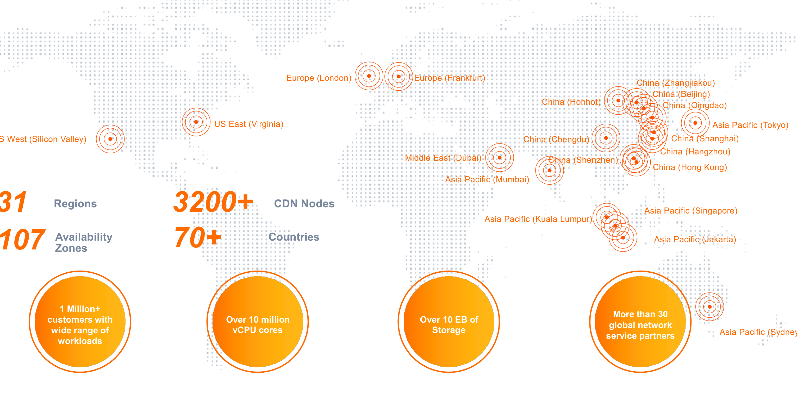
Three Local Zones
Region ap-southeast-5 operates 3 distinct Availability Zones (Zone A, Zone B, Zone C) in Jakarta.
Data Sovereignty & Residency
In-country data storage and processing ensures strict adherence to Indonesian data privacy regulations.
Ultra-Low Latency
Direct high-speed interconnectivity with local telecommunications carriers and Internet Exchanges (IXPs).
System Architecture: The Apsara Cloud OS
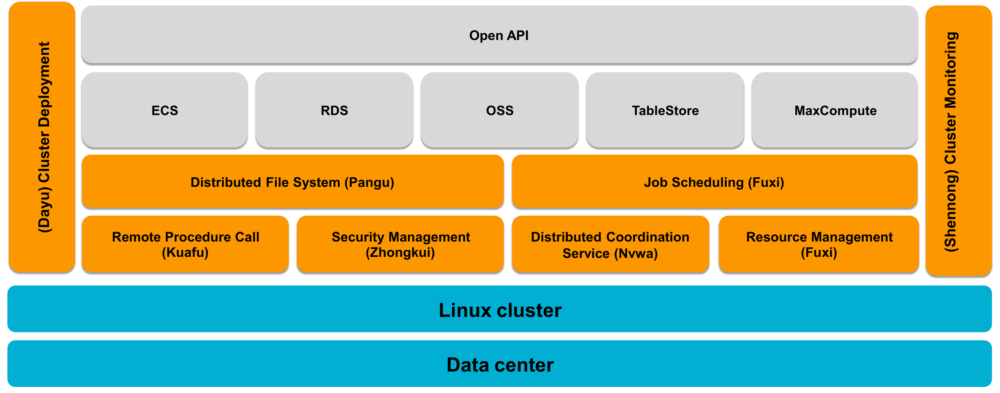
Dragonfly & CIPU
Hardware-accelerated hypervisor & zero-CPU-tax virtualization offload.
Pangu Storage
Distributed storage engine with 99.9999999999% data durability SLA.
Fuxi Scheduler
Hyper-scale distributed scheduling across millions of CPU cores.
Shennong & Kuafu
Real-time automated cluster health monitoring & high-speed RPC.
Enterprise Security & Compliance Standards
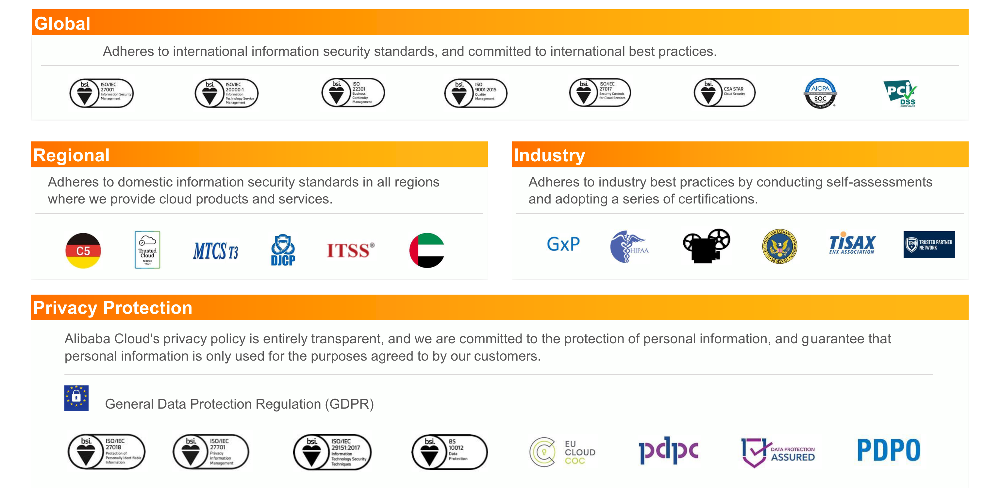
Global Accreditations
Certified with ISO 27001, SOC 1/2/3, and PCI-DSS Level 1 for banking-grade transactions.
Privacy & Compliance
Full compliance with GDPR privacy frameworks and Indonesian national regulations.
Data Sovereignty
Customer data is strictly isolated with envelope encryption via Key Management Service (KMS).
Computing Services Portfolio
Alibaba Cloud Computing Services provide resizable, secure, and automated compute capacity designed to host workloads from lightweight web servers to hyper-scale containerized microservices and AI computing clusters.
ECS
Elastic Compute Service
High-performance virtual cloud servers with customizable CPU, memory, and storage specifications.
SLB
Server Load Balancer
High-availability traffic distribution service routing incoming requests across multiple ECS instances.
Auto Scaling
Automated Capacity Elasticity
Dynamically adjusts running ECS instance counts based on real-time metrics and schedules.
ROS
Resource Orchestration Service
Infrastructure as Code (IaC) tool automating resource creation and stack replication via templates.
Alibaba Cloud – Elastic Compute Service (ECS)
Elastic Compute Service (ECS)
Elastic Compute Service (ECS) is an elastic computing service providing virtual servers with resizable compute capacity.
ECS eliminates the complexity of procuring, cabling, and maintaining physical servers. With instant image deployment, organizations launch production-ready virtual machines in seconds and pay only for actual utilized capacity.
Enterprise Stability
- High Availability SLA: 99.975% for single-zone instances and 99.995% for multi-zone deployments.
- Automated Disaster Recovery: Automated snapshot schedules and rapid cross-zone recovery.
Dynamic Elasticity
- Vertical Scaling: Upgrade or downgrade CPU and memory specs in minutes.
- Horizontal Scaling: Provision hundreds of instances simultaneously from pre-configured custom images.
High Performance
- CIPU Architecture: Hardware offloading delivers zero-tax host processing and ultra-low latency.
- Cloud Disk Storage: ESSD AutoPL disks bursting up to 1,000,000 IOPS and 4,000 MB/s throughput.
Robust Security
- Network Isolation: Deployed in private Virtual Private Clouds (VPCs).
- Micro-Segmentation: Granular inbound and outbound filtering with stateful Security Groups.
Alibaba Cloud – Server Load Balancer (SLB)
Server Load Balancer (SLB)
Server Load Balancer (SLB) distributes incoming application traffic across multiple backend ECS instances across availability zones.
By spreading inbound requests across server pools, SLB expands service throughput, eliminates single points of failure, and masks backend maintenance or unexpected hardware faults from users.
High Availability
- Up to 99.99% cross-zone SLA.
- Automatic primary/secondary zone failover.
Health Monitoring
- Layer 4 (TCP/UDP) & Layer 7 (HTTP/HTTPS).
- Automatic unhealthy node isolation.
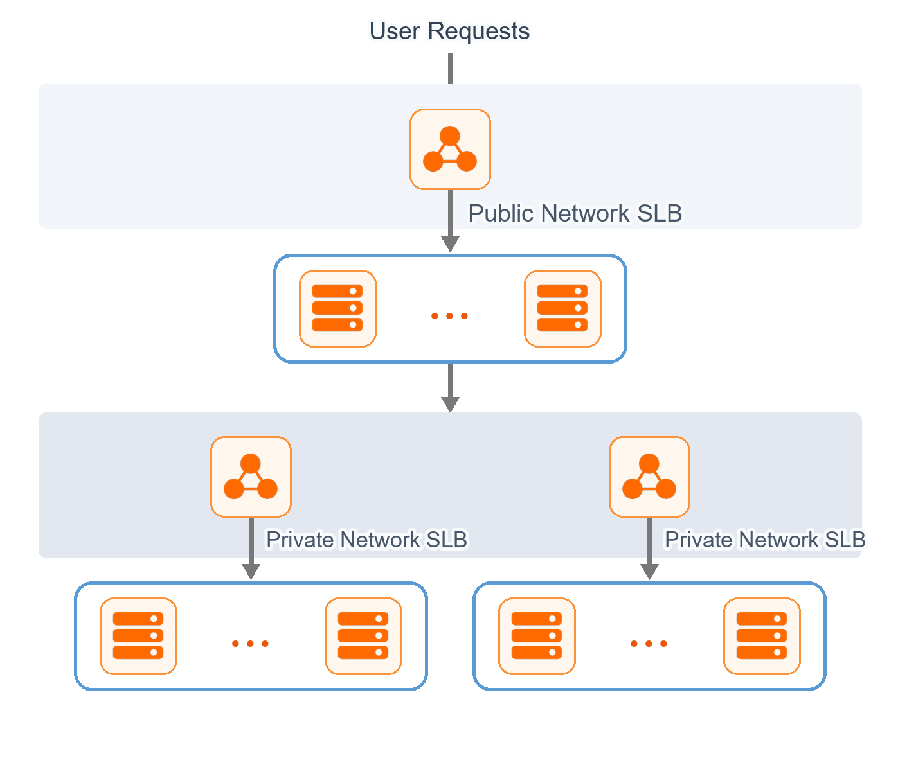
Alibaba Cloud – Auto Scaling
Auto Scaling (AS)
Auto Scaling is a management service that automatically adjusts the number of running ECS instances to match demand.
Scaling actions occur automatically based on metric tracking (CPU, memory, bandwidth) or cron schedules, maintaining optimal system performance while eliminating idle infrastructure cost.
Elastic Scale-Out
- Automatically adds ECS instances during high load.
- Zero manual operator intervention required.
Elastic Scale-In
- Releases excess computing capacity during quiet hours.
- Protects operational budgets from waste.
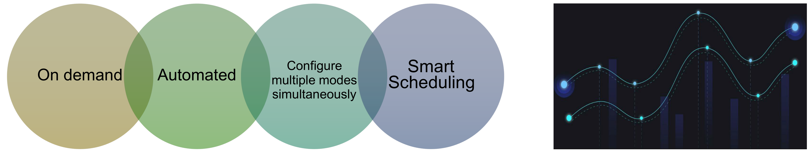
Seamless Ecosystem Integration
- SLB Auto-Configuration: Automatically adds newly provisioned ECS instances to Server Load Balancer backend server pools.
- RDS Whitelist Auto-Configuration: Automatically registers private IP addresses of scaled instances to ApsaraDB RDS security whitelists.
Alibaba Cloud – Resource Orchestration Service (ROS)
Resource Orchestration Service (ROS)
Resource Orchestration Service (ROS) is an Infrastructure as Code (IaC) service for automated cloud resource provisioning.
With ROS, architects define computing, storage, networking, and database architectures using standard JSON or YAML templates. ROS parses dependencies, calculates deployment order, and provisions all resources consistently.
Automated Orchestration
- Deploy complex multi-tier topologies with a single click or API call.
- Eliminates human error from manual console configurations.
Simplified Management
- Manages entire collections of resources as a single unified stack.
- Update or tear down entire environments cleanly in one operation.
Complete Stack Duplication
- Effortlessly replicate identical environments across multiple regions.
- Standardize development, testing, staging, and production environments.
Multi-Service Integration
- Combines VPC, ECS, SLB, RDS, OSS, and Security Groups into one blueprint.
- Compatible with Terraform and standard open-source toolchains.
ROS: Template-Driven Multi-Environment Provisioning
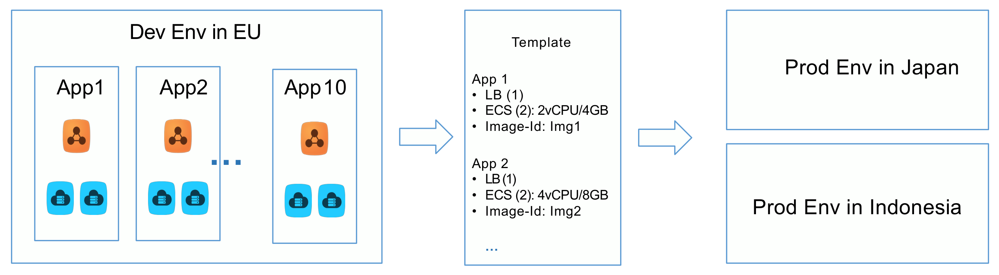
Declarative Infrastructure Blueprint
A single ROS template declares the entire production architecture: 1 Server Load Balancer, 2 ECS instances (2vCPU / 4GB RAM), private VPC subnets, and database connections.
Cross-Region Rapid Replication
- Production Environment in Indonesia: Instantly provisioned in Jakarta Region with local compliance parameters.
- Production Environment in Japan: Identical stack cloned into Tokyo Region for international low-latency users.
- Development Environment in EU: Scaled-down development stack launched in Frankfurt using identical template variables.
Zero Environmental Drift
By eliminating manual configuration steps, ROS ensures that security group rules, network CIDRs, and operating system images remain 100% synchronized across all operating regions.
Database & Storage Services Portfolio
Alibaba Cloud delivers managed database and storage services built for high performance, exabyte scale, and zero data loss. Fully managed platforms relieve enterprises from routine database administration and storage provisioning.
ApsaraDB RDS
Managed Relational Database
Automated provisioning, multi-zone failover, read replicas, and backups for MySQL, PG, and SQL Server.
Tablestore
Serverless NoSQL Database
Fully managed wide-column and key-value database scaling to millions of concurrent TPS with millisecond latency.
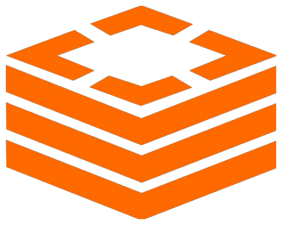
Tair (Redis-Compatible)
In-Memory Caching & Database
Sub-millisecond key-value caching service fully compatible with open-source Redis protocols.
OSS
Object Storage Service
Exabyte-scale, encrypted object storage with 12-nines durability and multi-tier lifecycle management.
Alibaba Cloud – ApsaraDB RDS
ApsaraDB RDS
ApsaraDB RDS is a fully managed relational database service supporting industry-standard database engines.
RDS automates routine database tasks such as server provisioning, operating system patching, routine backups, monitoring, and automated cross-zone failover, freeing DBAs to focus on query optimization and data modeling.
Multi-Engine Support
- Supported Engines: MySQL, PostgreSQL, MariaDB, and Microsoft SQL Server.
- Zero Modification: Fully compatible with native drivers and application code.
High Availability & DR
- Active-Standby Replication: Automated multi-zone synchronous replication.
- Automatic Failover: Seamless failover within seconds without IP changes.
Enterprise Security
- DDoS & SQL Inspection: Real-time SQL injection alarms and traffic scrubbing.
- Access Control: Strict IP whitelisting and TDE encryption at rest.
Automated Backups & PITR
- Scheduled Snapshots: Automated full daily backups to Pangu storage.
- Point-in-Time Recovery: Restore data to any second within the retention window.
RDS Key Feature: Read-Only Instances & Offloading
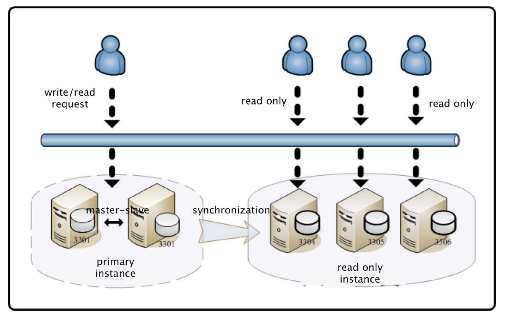
Offload SELECT Query Pressure
In typical web applications, read requests account for over 80% of database traffic. RDS allows architects to attach multiple read-only instances to offload intensive SELECT queries from the primary instance.
Independent Specifications & Scaling
- Flexible Sizing: Read-only instances can use different compute and memory specifications from the primary instance, scaling independently.
- Zero Maintenance Overhead: Read-only replicas automatically synchronize account credentials and database tables directly from the primary.
Unified Read/Write Splitting Endpoint
With a single read/write splitting endpoint, RDS automatically routes write queries (INSERT/UPDATE/DELETE) to the primary instance and distributes read queries across read-only instances.
Alibaba Cloud – Tablestore
Tablestore
Tablestore is a fully managed serverless NoSQL database service built on Apsara distributed storage.
It stores massive structured and semi-structured wide-column data, delivering linear horizontal scaling to millions of transactions per second (TPS) with single-digit millisecond response times and zero operational capacity planning.
Extreme Concurrency
- Effortlessly scales to millions of TPS globally.
- Consistent single-digit millisecond read/write latency.
Fully Serverless
- Zero cluster provisioning or node maintenance.
- Automatic data partitioning across distributed SSD storage.
Dynamic Schema Flexibility
- Primary key defines row identification; attribute columns are flexible.
- Ideal for IoT sensor telemetry, gaming stats, and social feeds.
Search Index Capabilities
- Secondary indexes, full-text search, and prefix matching.
- Geographic spatial queries and multi-column combinations.
Alibaba Cloud – Tair (Redis®-Compatible)
Tair (Redis-Compatible)
Tair is an enterprise-grade in-memory database and caching service fully compatible with open-source Redis protocols.
Designed to eliminate disk I/O bottlenecks, Tair accelerates read-heavy workloads with sub-millisecond latencies, powering session caches, leaderboard rankings, distributed locking, and real-time gaming state management.
Redis Protocol Compatible
- 100% compatible with open-source Redis commands.
- Seamless migration with zero application code rewrites.
Sub-Millisecond Speed
- In-memory data processing serving hundreds of thousands of QPS.
- Dramatically reduces relational database read load.
High Availability
- Primary-Secondary master replication with auto-failover.
- Multi-zone disaster recovery deployments supported.
Advanced Data Structures
- Extended modules: TairString, TairHash, TairGIS, and TairSearch.
- Persistent storage options (DRAM + Persistent Memory).
Alibaba Cloud – Object Storage Service (OSS)
Object Storage Service (OSS)
Object Storage Service (OSS) is an encrypted, highly durable, and cost-effective cloud object storage service.
OSS allows organizations to store, protect, and analyze unstructured data—such as images, video streaming files, enterprise backups, and log archives—accessible from anywhere over standard RESTful HTTP/HTTPS interfaces.
Massive Capacity
- Exabyte Scale: Unlimited total capacity expansion per account.
- File Size Support: Single objects can scale up to 48.8 TB in size.
12-Nines Durability
- Durability SLA: 99.9999999999% (12-nines) data reliability.
- Pangu Redundancy: Distributed erasure coding across failure domains.
Tiered Lifecycle
- Standard, Infrequent Access (IA), Archive, and Deep Cold Archive.
- Automated lifecycle rules transition data to optimize cost.
In-Place Processing
- Serverless on-the-fly image resizing, cropping, and format conversion.
- Integrated video transcoding and zip decompression.
Alibaba Cloud – Simple Message Queue (SMQ)
Simple Message Queue (SMQ)
Simple Message Queue (SMQ) is a distributed, fully managed message queuing service for reliable asynchronous application communication.
SMQ decouples distributed application modules, absorbs massive traffic bursts, and guarantees message delivery even when downstream consumer systems experience temporary failure or heavy processing backlog.
Simple RESTful API
- Easy-to-use API-based service.
- Standard RESTful HTTP interface accessible anywhere.
Decoupled Systems
- Producers and consumers operate completely independently.
- Upstream services remain responsive during traffic spikes.
Extreme Reliability
- Triplicate message storage ensures zero message loss.
- Automated retry policies and Dead-Letter Queues.
High Concurrency
- Serverless scaling handling millions of concurrent messages.
- Configurable visibility timeout prevents duplicate processing.
Message Service: Queue Model vs. Topic Model
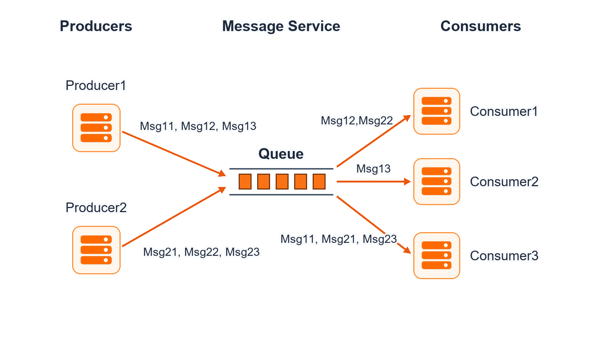
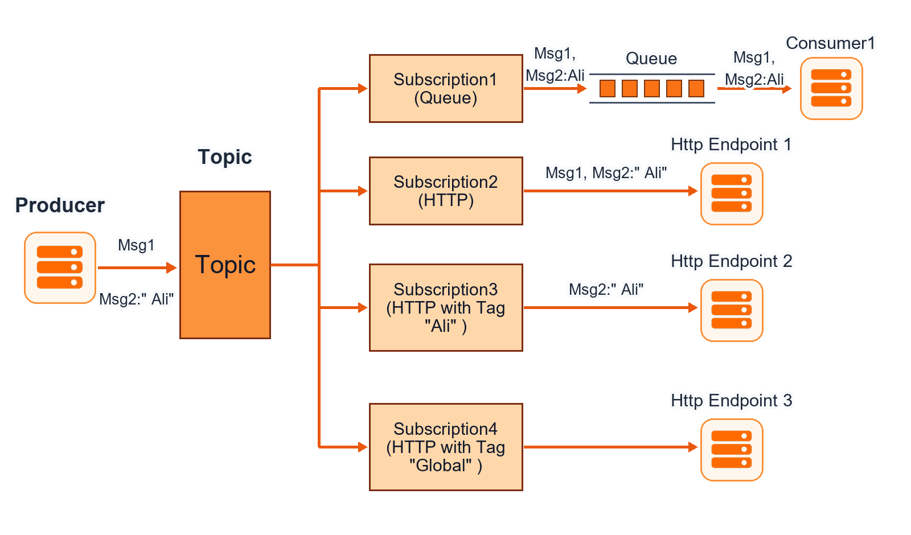
Queue Model (Worker Processing)
- Point-to-Point Delivery: Each message is retrieved and processed by exactly one active worker consumer.
- Message Invisibility Timeout: When a worker receives a message, it becomes invisible to other workers. If the worker fails, the message reappears for another worker.
- Use Cases: Order transaction processing, background video transcoding, asynchronous batch jobs.
Topic Model (Publish/Subscribe Notification)
- Broadcast Fan-Out: A single published message is duplicated and distributed to multiple heterogeneous endpoints.
- Multi-Protocol Subscribers: Push notifications directly to HTTP endpoints, Email, SMS, or downstream SMQ queues.
- Use Cases: System event alerts, real-time user notification broadcasts, multi-system status synchronization.
Managed Open-Source Message Services
In addition to serverless SMQ, Alibaba Cloud provides fully managed enterprise implementations of leading open-source messaging and event-streaming engines with zero cluster maintenance overhead.
Managed Apache Kafka
High-Throughput Log Streaming
Optimized for real-time big data pipelines, distributed log aggregation, clickstream tracking, and stream analytics.
Managed Apache RocketMQ
Financial-Grade Distributed Messaging
Developed by Alibaba Group; delivers ultra-low latency, strictly ordered FIFO messaging, and distributed transaction consistency.
Managed MQTT
Massive IoT Device Connectivity
Lightweight pub/sub protocol connecting millions of concurrent smart devices, connected vehicles, and mobile clients.
Network Services Portfolio
Alibaba Cloud Network Services build secure, highly scalable software-defined networks (SDN) connecting cloud resources, global users, and hybrid corporate data centers with ultra-low latency and enterprise SLAs.
VPC
Virtual Private Cloud
Isolated software-defined cloud network with custom IP CIDR.
CEN
Cloud Enterprise Network
Global transit backbone interconnecting multi-region VPCs.
EIP
Elastic IP Address
Independent floating public IPv4 address for ECS, SLB, and NAT.
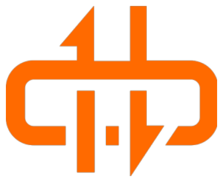
NAT Gateway
Enterprise NAT Proxy
Managed gateway for outbound SNAT and inbound DNAT.
CDN
Content Delivery Network
Edge caching accelerating web delivery worldwide.
Alibaba Cloud – Virtual Private Cloud (VPC)
Virtual Private Cloud (VPC)
Virtual Private Cloud (VPC) allows you to create isolated private networks on top of Alibaba Cloud.
VPC gives you full control over your virtual network environment, including selecting your own IP address range, dividing subnets across availability zones, configuring route tables, and establishing hybrid enterprise connectivity.
Security Isolation
- Hardware-level isolation via VXLAN tunneling encapsulation.
- Broadcast domain completely isolated at instance virtual NIC.
Custom Address Space
- Full support for RFC 1918 CIDR blocks (
10.0.0.0/8,172.16.0.0/12,192.168.0.0/16). - Granular subnet allocation without address overlaps.
Immediate Management
- Full control over route tables and virtual switches.
- Network management changes take effect instantaneously.
Hybrid Connectivity
- Software IPsec-VPN and SSL-VPN tunnels.
- Express Connect dedicated high-speed leased lines.
- Direct integration with Cloud Enterprise Network (CEN).
Alibaba Cloud – Cloud Enterprise Network (CEN)
Cloud Enterprise Network (CEN)
Cloud Enterprise Network (CEN) is an enterprise-class private networking service built on Alibaba Cloud's global network backbone.
Powered by Transit Routers (TR), CEN establishes secure, high-speed, any-to-any private connections between VPCs across regions and on-premises corporate data centers with automated route learning.
Ultra-Low Jitter
- Carrier-grade fiber connections.
- Ideal for cross-region DB sync.
High SLA & Reliability
- Availability SLA ≥ 99.95%.
- Packet loss rate < 0.2%.
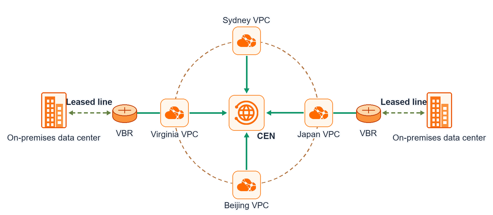
Alibaba Cloud – Elastic IP (EIP)
Elastic IP (EIP)
An Elastic IP (EIP) address is a public IPv4 address resource that you can purchase and manage independently.
Unlike fixed public IPs, EIPs are decoupled "floating" IPs that can be bound, unbound, and moved between ECS instances, SLB load balancers, and NAT Gateways in seconds without service restarts.
EIP vs. Fixed Public IP Comparison
| Architectural Feature | Elastic IP (EIP) | Fixed ECS Public IP |
|---|---|---|
| Lifecycle Independence | Yes (Retained when ECS is deleted) | No (Released with ECS) |
| Dynamic Migration | Yes (Move between ECS, SLB, NAT) | No (Locked to single ECS) |
| Multi-Line BGP Bandwidth | Supported (BGP multi-ISP routing) | Standard IP routing only |
| Shared Bandwidth Packages | Supported (Share quota across IPs) | Dedicated bandwidth only |
High Availability Rule: During an emergency instance failure, architects can immediately rebind the production EIP to a standby ECS instance or NAT Gateway, restoring public traffic in seconds without DNS record propagation delays.
Alibaba Cloud – NAT Gateway
NAT Gateway
NAT Gateway is an enterprise-class public network gateway providing managed SNAT and DNAT proxy services.
Built with native cross-zone disaster recovery and capable of handling up to 100 Gbps forwarding throughput, NAT Gateway connects private VPC subnets to the public Internet without assigning public IPs directly to backend servers.
SNAT (Source NAT)
- Enables private ECS instances to securely access the Internet.
- Masks internal private IPs from outside access.
DNAT (Destination NAT)
- Forwards external inbound traffic to internal private ports.
- Provides secure port mapping and service exposure.
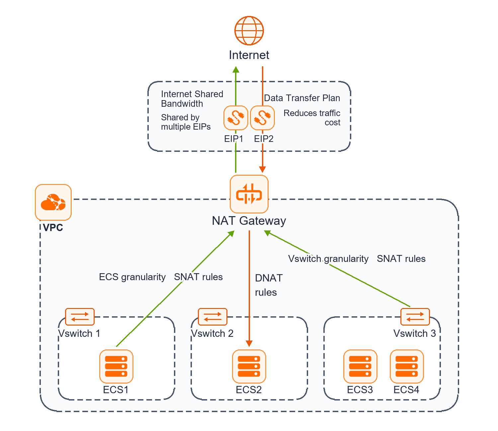
Alibaba Cloud – Content Delivery Network (CDN)
Content Delivery Network (CDN)
Content Delivery Network (CDN) quickly delivers web, media, and application content to end users worldwide.
By caching static and dynamic resources at edge nodes closest to users, CDN shortens response times to milliseconds, ensures smooth video streaming, and shields origin servers from direct traffic surges.
Hyper-Scale Network
- 2,800+ global edge nodes.
- 180+ Tbps total bandwidth capacity.
Dynamic Acceleration (DCDN)
- Dynamic route optimization for APIs.
- WebSocket & QUIC protocol acceleration.
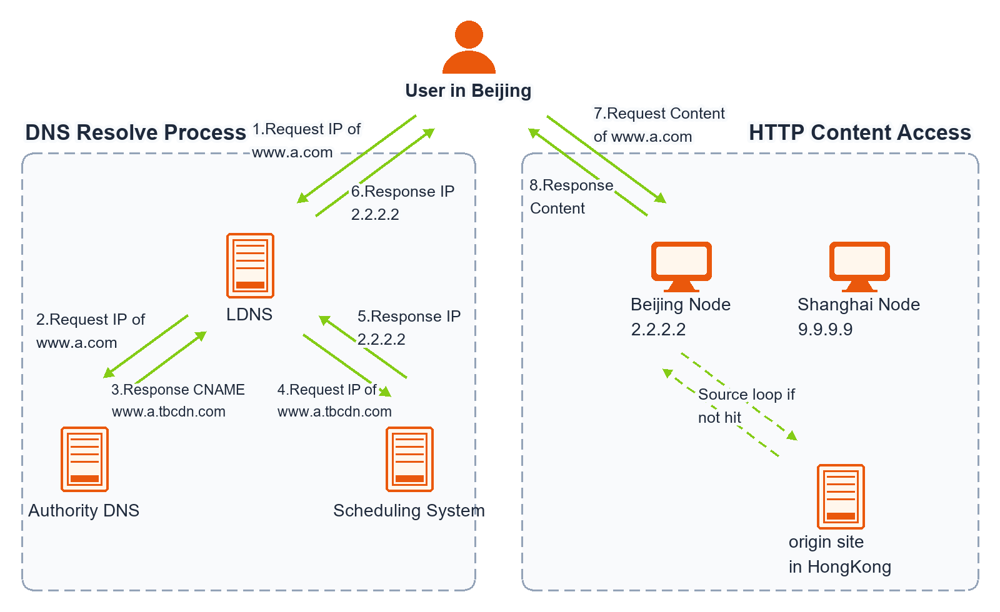
Security & Governance Services Portfolio
Alibaba Cloud delivers defense-in-depth security and comprehensive operational governance, safeguarding enterprise workloads against volumetric cyberattacks, web application exploits, and unauthorized internal access.
Anti-DDoS
DDoS Defense
Terabit volumetric attack scrubbing protecting public endpoints.
WAF
Web App Firewall
Layer 7 defense blocking SQL injection, XSS, and bad bots.
Security Center
Workload Protection
Vulnerability scanning, ransomware defense, and threat analysis.
CloudMonitor
Full Observability
Unified dashboards, infrastructure metrics, and incident alerts.
RAM
Identity Governance
Access control, roles, STS tokens, and least privilege.
Alibaba Cloud – CloudMonitor
CloudMonitor
CloudMonitor is a built-in monitoring and observability service providing unified visibility across your cloud resources.
It automatically collects performance metrics from ECS, RDS, SLB, OSS, and networks, generating customized dashboards, health reports, and multi-channel alerts to detect and resolve incidents before they impact users.
Rich Visualization
- Customizable operational dashboards for NOC and DevOps teams.
- Automated asset health reports tracking resource status.
Infrastructure Tracking
- ECS operating system and hypervisor hardware metrics.
- Out-of-the-box telemetry for RDS, SLB, OSS, and Redis.
- Supports monitoring on-premises and hybrid servers.
Multi-Channel Alerting
- Instant alerts triggered by metric thresholds and status changes.
- Delivery via DingTalk, Email, SMS, or custom Webhooks.
Automated Scaling Triggers
- Directly integrates with Auto Scaling to trigger scale-out/scale-in.
- Automates incident remediation scripts via Function Compute.
Alibaba Cloud – Resource Access Management (RAM)
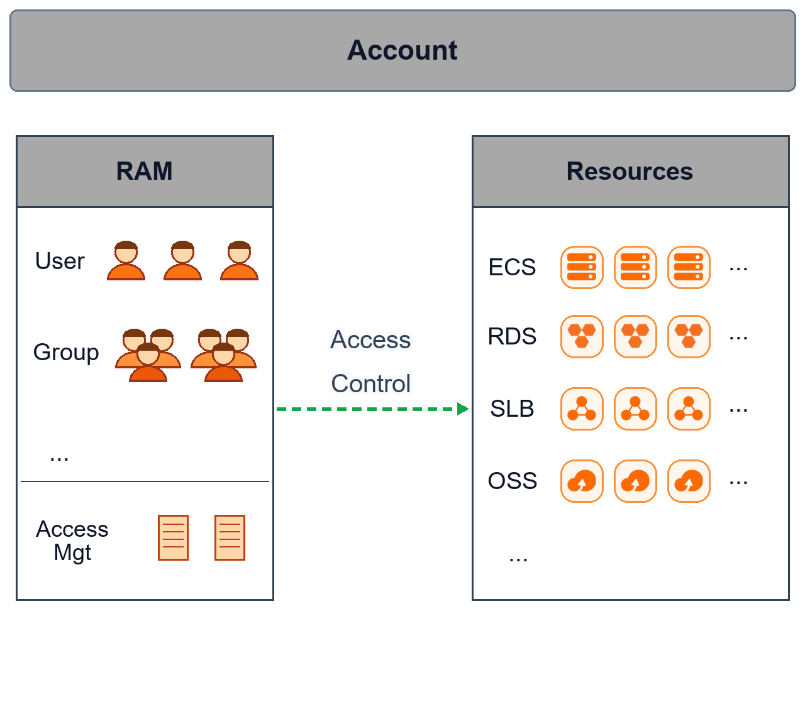
RAM Core Functionality
Resource Access Management (RAM) enables organizations to centrally control which people, groups, and automated services can perform specific actions on specific cloud resources.
Architectural Best Practices (from Courseware)
- Manage Permissions via Groups: Assign policies to User Groups rather than individual users for clean administrative lifecycle management.
- Enforce Least Privilege: Grant only the minimum permissions necessary for users to complete assigned business duties.
- Enable MFA & Password Policies: Require Multi-Factor Authentication (MFA) and strict rotation for privileged administrative accounts.
- Use RAM Roles & STS: Assign RAM Roles to ECS instances and applications to obtain temporary, auto-rotating STS credentials instead of embedding permanent AccessKeys.
Practice Scenario 1: Decoupled Multi-Tier Web Architecture
- A Elastic Container Instance (ECI) + Tablestore + Managed Apache Kafka
- B Elastic Compute Service (ECS) with Auto Scaling + ApsaraDB RDS with Read-Only Instances + Simple Message Queue (SMQ)
- C Dedicated Host (DDH) + ApsaraDB for Redis + Resource Orchestration Service (ROS)
- D Server Load Balancer (SLB) + Object Storage Service (OSS) + Cloud Enterprise Network (CEN)
Scenario 1: Solution & Architectural Analysis
Practice Scenario 2: Enterprise Hybrid & Multi-VPC Transit Networking
- A Assign public Elastic IP (EIP) addresses to all compute instances and configure software SSL-VPN tunnels over the public Internet.
- B Deploy a NAT Gateway with SNAT and DNAT entries in each VPC and route private traffic across the public Internet.
- C Deploy Cloud Enterprise Network (CEN) with Transit Routers (TR) attaching all regional VPCs and the on-premises Express Connect virtual border router.
- D Configure point-to-point VPC Peering connections between every pair of VPCs and write manual static route entries for all CIDRs.
Scenario 2: Solution & Architectural Analysis
Practice Scenario 3: Secure Least-Privilege Application Access
- A Configure the Alibaba Cloud root account AccessKey in the instance operating system environment variables.
- B Configure the OSS bucket Access Control List (ACL) to public-read and public-write so instances can access files without authentication.
- C Create a dedicated RAM User with an OSS policy, generate a permanent AccessKey, and save the credentials into a local configuration file on each ECS disk.
- D Create a RAM Role with a scoped OSS policy, attach the role to the ECS instance, and let the application retrieve temporary STS credentials via the Instance Metadata Service (IMDS).